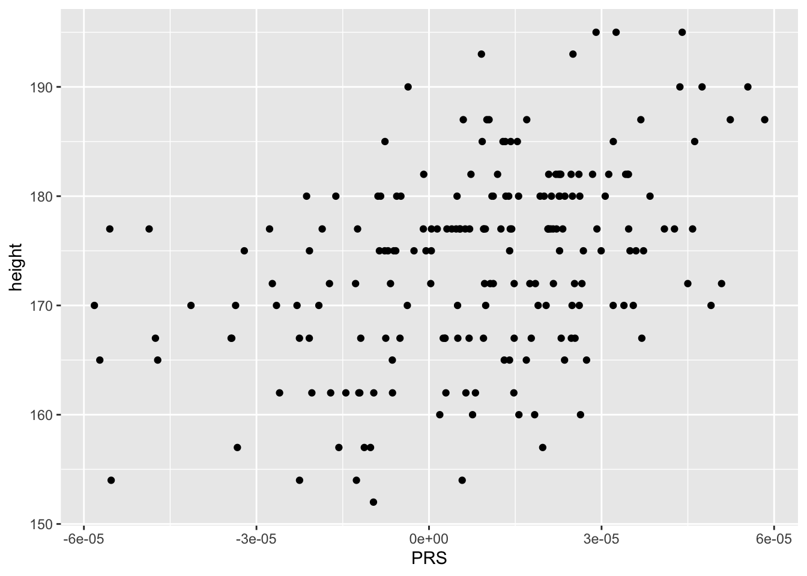

suppressMessages(library(tidyverse))
suppressMessages(library(RSQLite))
suppressMessages(library(glue))
PRE = "/Users/haekyungim/Library/CloudStorage/Box-Box/LargeFiles/imlab-data/data-Github/web-data"
DATA=glue("{PRE}/2021-04-21-personal-genomes-project-data/Lab-personal-genomes-project-data")
if(!file.exists(DATA)) system(glue("mkdir -p {DATA}"))lab 4
bios25328
lab
description here
Goals and Introduction
In this lab we are going to use the PRSice software to take height GWAS results and predict height of the Personal Genome Project individuals using their genotype data.
Goals
- Download data from box
- Download PRSice
- Run exploratory analysis of data
- Run PRSice
- Plot observed versus predicted for height
Setup
load R packages and define paths
Download data
- download the data from here and place it in a directory called DATA
- download PRSice software from https://choishingwan.github.io/PRSice/
wget https://github.com/choishingwan/PRSice/releases/download/2.3.3/PRSice_mac.zip- move the executable to the directory where you keep your software (optional)
** the first time you run PRSice, it will install additional components **
** make sure PRSice is executable ** chmod u+x PRSice
Terminal Setup
PRE="/Users/haekyungim/Library/CloudStorage/Box-Box/LargeFiles/imlab-data/data-Github/web-data"
DATA="$PRE/2021-04-21-personal-genomes-project-data/Lab-personal-genomes-project-data"
PRSice="/Users/haekyungim/bin/PRSice_mac" # file/path/to/PRSice
$PRSice/PRSice_mac --help cd $DATA
WORK=$DATAExploration of the Data
open the database with phenotype information and list tables
dbname <- paste0(DATA,"/repgp-data.sqlite3") ##This is just to create the file path to the sqlite3 file
## connect to db
db = dbConnect(sqlite, dbname)
## list tables
dbListTables(db)[1] "ancestry_jkp" "ancestry_pop" "ancestry_supop" "users" query database users table
dbListFields(db,"users")[1] "id" "sample" "height" "weight" "human_id" "file_id" "blood"
[8] "gender" "race" query <- function(...) dbGetQuery(db, ...)
users = query("select * from users")
names(users)[1] "id" "sample" "height" "weight" "human_id" "file_id" "blood"
[8] "gender" "race" look at distribution by count for each column
users %>% count(race) race n
1 * 68
2 American Indian or Alaska Native 2
3 Asian 6
4 Black or African American 1
5 Caucasian (White) 1
6 Hispanic or Latino 2
7 Hispanic/Latino 3
8 White 167users %>% count(gender) gender n
1 * 69
2 Female 46
3 Male 135users %>% count(blood) blood n
1 * 111
2 A+ 41
3 A- 10
4 AB+ 4
5 AB- 1
6 B+ 16
7 B- 4
8 O+ 52
9 O- 11plot height distribution by gender
users %>% ggplot(aes(height,fill=gender)) + geom_density(alpha=0.6) + ggtitle("Height by gender - Missing gender, *, has bi-modal distr.") + theme_minimal(base_size = 15)
run PRSice
create phenotype data file
create phenotype data file as intersection of the plink formatted fam file and the users table from the database repgp-data.sqlite3
fam = read_tsv(glue::glue("{DATA}/repgp.fam"),col_names = FALSE)Rows: 568 Columns: 6
── Column specification ────────────────────────────────────────────────────────
Delimiter: "\t"
chr (1): X2
dbl (5): X1, X3, X4, X5, X6
ℹ Use `spec()` to retrieve the full column specification for this data.
ℹ Specify the column types or set `show_col_types = FALSE` to quiet this message.names(fam)[1:2] = c("FID","IID")
fam <- fam %>% select(FID, IID) %>% inner_join(users %>% select(sample,height,weight,gender), by=c("IID"="sample"))
write_tsv(fam,file=glue::glue("{DATA}/phenodata.txt"))execute bash command to run PRSice
mkdir $WORK/output
Rscript $PRSice/PRSice.R --dir $PRSice \
--prsice $PRSice/PRSice_mac \
--base $WORK/ukb_height.gz \
--target $WORK/repgp.chr# \
--snp variant_id \
--A1 effect_allele \
--A2 non_effect_allele \
--stat effect_size \
--beta \
--pvalue pvalue \
--pheno-file $WORK/phenodata.txt \
--pheno-col height \
--bar-levels 5e-08,5e-07,5e-06,5e-05,5e-04,5e-03,5e-02,5e-01,1 \
--fastscore \
--binary-target F \
--thread 2 \
--out $WORK/output/height_score_allIf you get duplicated SNP ID, follow the instructions
Rscript $PRSice/PRSice.R --dir $PRSice \
--prsice $PRSice/PRSice_mac \
--base $WORK/ukb_height.gz \
--extract $WORK/output/height_score_all.valid \
--target $WORK/repgp.chr# \
--snp variant_id \
--A1 effect_allele \
--A2 non_effect_allele \
--stat effect_size \
--beta \
--pvalue pvalue \
--pheno-file $WORK/phenodata.txt \
--pheno-col height \
--bar-levels 5e-08,5e-07,5e-06,5e-05,5e-04,5e-03,5e-02,5e-01,1 \
--fastscore \
--binary-target F \
--thread 2 \
--out $WORK/output/height_score_allThis may take a couple minutes
plot observed vs predicted height
## we already have the phenotype data in the fam variable
predicted_height = read_delim(glue::glue("{DATA}/output/height_score_all.best"),delim=" ")Rows: 568 Columns: 4
── Column specification ────────────────────────────────────────────────────────
Delimiter: " "
chr (2): IID, In_Regression
dbl (2): FID, PRS
ℹ Use `spec()` to retrieve the full column specification for this data.
ℹ Specify the column types or set `show_col_types = FALSE` to quiet this message.combined <- predicted_height %>% inner_join(fam,by=c("IID"="IID"))
combined %>% ggplot(aes(PRS,height)) + geom_point() + theme_minimal(base_size = 15)
regress observed height with predicted height (PRS)
summary(lm(height ~ PRS,data=combined)) %>% coef() Estimate Std. Error t value Pr(>|t|)
(Intercept) 172.6716 6.075067e-01 284.230021 1.916175e-259
PRS 159197.1399 2.478220e+04 6.423849 9.758137e-10